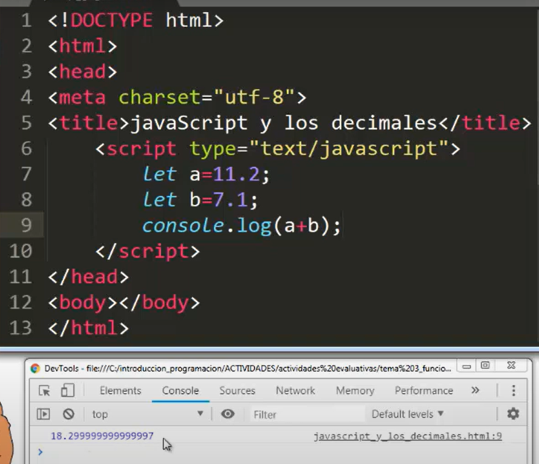
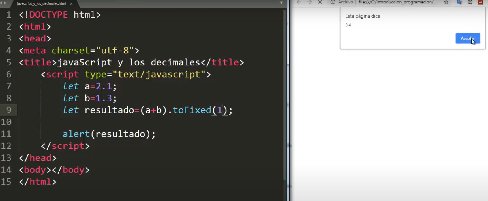
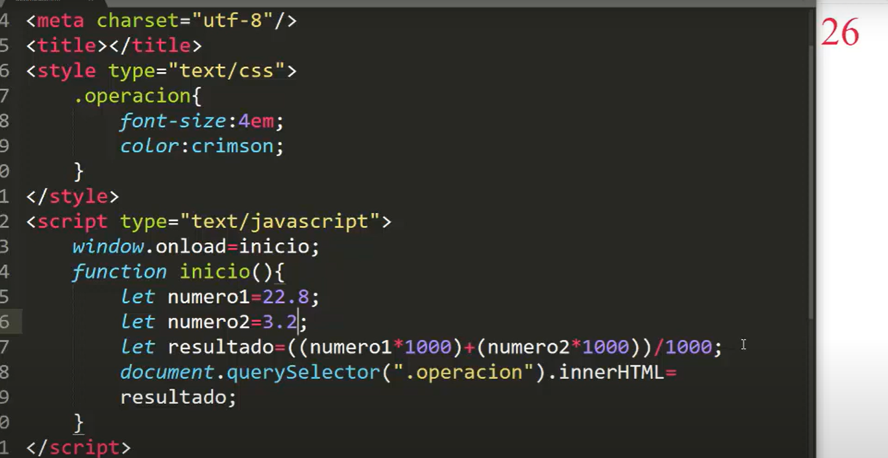
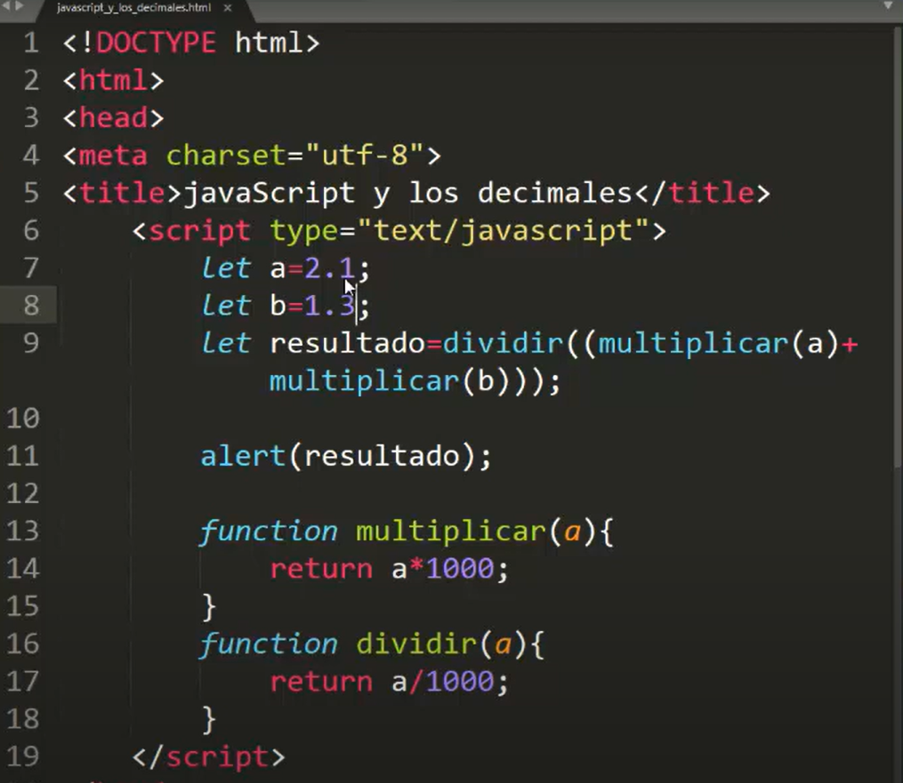
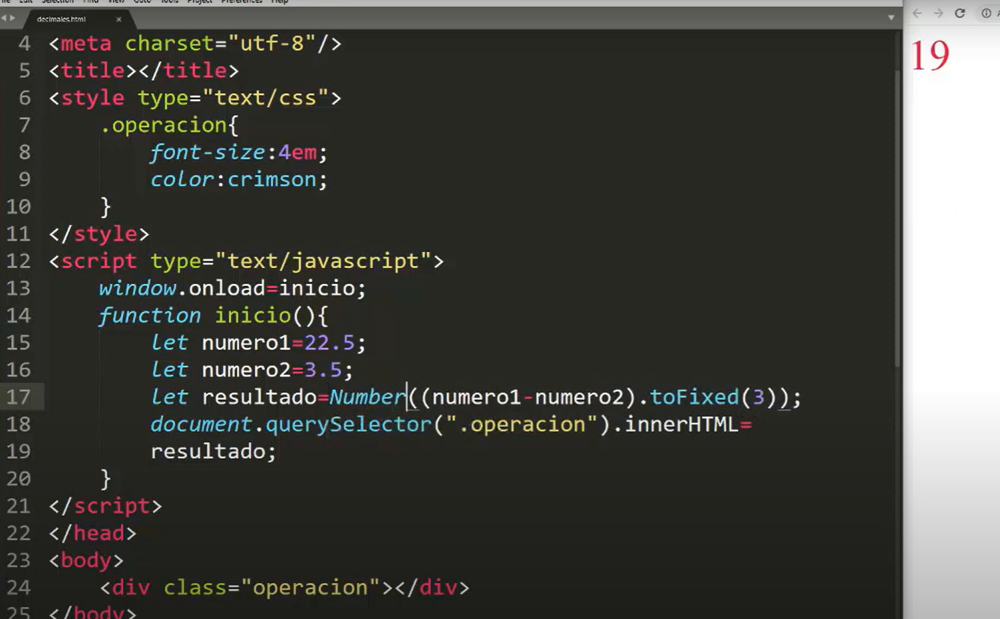

EL ERROR CON LOS DECIMALES EN JS
Al realizar operaciones aritméticas (sumas, restas, multiplicaciones) con números decimales
javaScript el resultado es un PROBLEMA, ya que realiza los cálculos incorrectamente añadiendo
multitud de decimales innecesarios y causando un problema de difícil solución.
1

SOLUCION
toFixed(numero) = quita decimale que se le pida quitar en el (numero)
Number = Combierte a numericos
1.toFixed(numeros de decimales)
con este se pueden agregar la cantidad de decimales que uno quiere que quede el resultado
2

ERRORE
cuando se quiere calcular un numero y este es entero siempre salbra agregandole los 0 decimales y no permite quitar los decimales
2.formula matematica
si tengo un decimal y luego lo multiplico por 1000 u otro numero y luego lo divido por ese numero me de un numero entero
3

osea eliminar los decimales multiplicandolos decimale y luego dividirlos el resultado por el mismo numero
4

3.Number(().toFixed())
la solución más efectiva, fácil, rápida e indolora al problema que se produce cuando javaScript
realiza cualquier operación aritmética con decimales, donde una simple suma como:
0.2 + 0.1
tiene como resultado:
0.30000000000000004, y no 0.3 (como sería lo lógico)
5

lo que se hae es poner de manera conjunta Number(().toFixed()) par aque asi solucione el error
poniendo los decimales que se brnesecitan y eliminar los innecesarios
COMO HACER LO??
primero realizando la operacion y luego agregarle el .toFixed y depues enserrar todo con un Number
EJ: img 5 linea 17